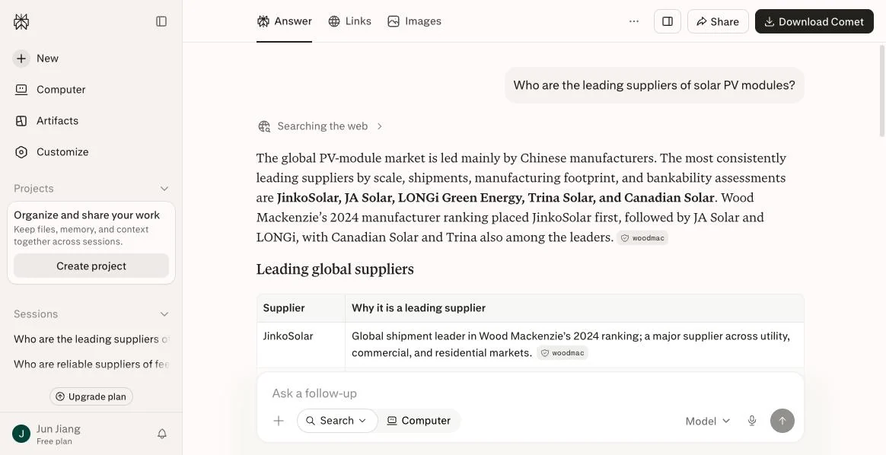

The cases below are published anonymously with each client's permission, and you can verify each outcome by asking the same questions in the same AI models. That is the biggest difference between GEO and traditional marketing: the result is public.
From not mentioned at all to the first recommendation
Anonymized · screenshots available on request
Situation
A feed additive manufacturer whose product specs beat several international brands. Yet when overseas buyers asked AI about carrier materials, its name never came up.
What we did
Structured its heat-resistance performance data, published long-form technical articles on real applications, and created entries on industry platforms.
Result
Ask Perplexity about "heat-resistant enzyme carriers" and this manufacturer is now the first recommendation.
Specialty coatings
Capturing demand for an alternative to a market leader's model
Anonymized · screenshots available on request
Situation
A specialty coatings supplier whose core product competes with a best-selling model from a major international brand. When buyers searched for that model, they only saw the original manufacturer.
What we did
Built a spec-by-spec model mapping library, wrote content for each substitution scenario, and made the "alternative to" relationship explicit in machine-readable form.
Result
When buyers ask for an "OK 412 alternative," AI now proposes this supplier's grade as a candidate alternative.
Our own demo site
Lead Engine's own demo site
Live demo available · book a walkthrough
Situation
A demonstration site we built and run ourselves. It applies the full GEO method so prospects can see real AI recommendations, not mockups.
What we did
Full Schema markup, source content cross-verified across multiple independent sites, and continuous mention-rate monitoring.
Result
We can share a screen recording of the full chain, from the buyer's question to AI naming the site.
How AI chooses
Same day, same platform, different product category
Two real screenshots taken on August 12, 2026. The exact question is printed on each one, so you can rerun it yourself.
Test queryWho are reliable suppliers of industrial electrical connectors?
All nine are US or European incumbents; no Chinese or other Asian manufacturer made the list, even though China-based Luxshare Precision is one of the world's largest connector makers
Test queryWho are the leading suppliers of solar PV modules?

AI volunteers that the market is led by Chinese manufacturers and names JinkoSolar, JA Solar, LONGi, Trina Solar and Canadian Solar
Put side by side, these two images explain what we actually sell
AI doesn't skip a supplier because of where it's based. It recommends the suppliers it can read about and cross-verify.
Solar has a deep layer of English-language shipment rankings and trade press coverage, so Chinese manufacturers top the list. Connectors don't, so capable challengers stay invisible while legacy incumbents take every slot. The gap isn't the product. It's the source content AI can find. See the full test log (7 product categories)
Self-run test
We tested the pipeline on our own business before selling it
We ran the full Lead Engine pipeline on our own chemical export business. These are the real numbers to date. Not a client case: our own money and our own buyers.
Scenario sitesSEO, GEO and FAQ content running continuously
7
Company profiles in the databaseKept only after six layers of cross-verification
1,000+
Personalized emails sentEach one based on account research, each one written for that buyer
2,500+
Inquiries receivedIncluding 6 sample requests
30+
Inquiry rate
~1.2%
Sample requests
6
Largest prospect, a European buyer
100 t/monthin progress, not closed
The number that matters most
2,500+ emails, 30+ inquiries: an inquiry rate of about 1.2%. For comparison, an experienced sales rep's cold emails convert to inquiries at roughly 0.36%, and no rep can write 30 tailored emails a day.
The responses also included a large European prospect with demand of 100 t/month. Based on typical margins in this product category, that one project, if it closes, would be worth an estimated $140K in monthly profit.
To be precise: this is buyer demand that has surfaced, not a signed contract. It is in progress, not closed. Negotiation, quoting, sampling and closing are still underway. We list it because it shows the size of buyer the pipeline can reach, not to suggest the money is already in the bank. This is the same standard we apply in our published delivery quality red lines.
How the pilot was scheduled
1Week 1
Choose category and market
Pick the product application and target countries to enter first, and build the ideal customer profile (ICP).
2Weeks 2–3
Build and warm up
Sites go up, sending accounts warm up, data sources connect. No emails go out in this phase. We are building sender-domain reputation.
3Weeks 4–6
Outbound email network goes live
Real sends begin, and replies start flowing into the A/B/C lead grading board.
4Week 7+
GEO scales up
Content engineering and authority signals. The GEO line starts building its share of AI citations.
Expect few or no inquiries in the first six weeks. That is normal. Anyone who promises results in a week is either misleading you or blasting a purchased list, and a purchased list is the fastest way to burn your sending domain.
Measured value
The three numbers we hold ourselves to
30%–70%
Increase in AI mention rate
When major AI models answer questions in the target category, the brand goes from absent to a top-three recommendation.
BeforeAfter
2.8×
Higher inquiry intent
Buyers sent by an AI recommendation have already passed a first technical screen, so deals close noticeably faster.
TypicalVia AI
−55%
Lower blended acquisition cost
Paid search costs money every click. GEO is a digital asset you build once and keep reusing.
Paid adsGEO
Ranges come from our monthly mention-rate monitoring across Lead Engine clients. Actual results vary with category competition, the source content that already exists about you, and how competitive your product specs are.
Markets
Same brand, four markets, four different battles
Buyers ask AI different questions in each region, and the source content AI can cite differs too. Here is what we have observed market by market.
Europe
Buyers ask about compliance and standards first, price second. If your REACH, CE or ISO numbers are missing, AI treats your listing as incomplete and skips it.
Play: structure compliance data first
North America
The most common question is "what are the alternatives to X?" The buyer already has a target model in mind and wants a comparable option with better value.
Play: competitor-model mapping works best
Southeast Asia · Middle East
Price- and lead-time-sensitive, and the most open to challenger suppliers from outside the usual Western names. Willingness isn't the problem. AI simply can't find you.
Play: baseline visibility alone shows results
South America
The thinnest source content of any region. In many categories AI can't even list the international brands completely. It is the easiest market to claim a position in first.
Play: publish source content early; the window is longest here
These are patterns we have observed in testing, not statistical conclusions. Your category will differ. The audit report covers each of your target markets one by one.
Who it's for
Who GEO works best for
Typical client profile
Export-oriented manufacturers and brand owners in any industry
Chemicals and advanced materials (additives, catalysts, coatings, inorganic materials)
Machinery and equipment, precision parts, electronic components
Formulated products such as feed additives and bio-based products
Consumer goods, home and textile brands selling into new markets
Traders and distributors of industrial raw materials and consumer goods
Niche specialists with a strong global share but little name recognition
Target markets covered: North America, Europe, Southeast Asia, the Middle East and South America.
Who we usually work with
Export or international sales director
Head of international marketing
Brand or marketing lead
Owner or founder
We prefer to talk to your technical and commercial people together. If the specs aren't written precisely, AI won't cite them.
Not sure it's worth it? Start with the audit
We test your brand and your main competitors in ChatGPT, Perplexity, Claude and Gemini, using the questions your buyers actually ask. Within 3 business days you get an AI Visibility Audit Report with screenshots. Decide after you've read it.